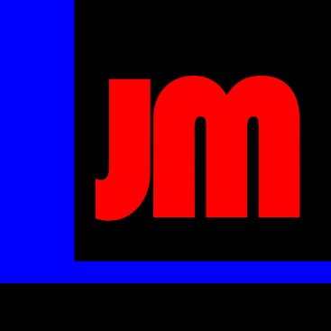

- 스팀월드
- 저스트무브
- 라이프리뷰
JM Lee

유튜버 JM Lee 채널은 여러가지 체널로 이루어 져 있지만 대표적으로
위의 3가지 채널이다. 유튜브에서 활동한 시간은 얼마 되지 않았지만
앞으로 해당 분야의 큰 줄기로 자리잡을 유망한 채널임에 틀림 없다.
해당 유튜버는 이와함께 KTW라는 지인을 통해 코딩이라는 새로운 분야에
도전하게 되었으며 현재 아래와 같은 내용의 정보를 습득하는 중이다.
h1~h6/h1~6 : 제목크기
br : 줄 띄우기
p : 문단 띄우기
strong/trong : 진하게
src : 이미지 삽입
width : 이미지 크기
u/u : 밑줄
style : 장간
li/li : 목차
ul/ul : 목차에 대한 단락 띄우기
tep 키 : 들여쓰기
ol/ol : ul을 순번 자동으로 표시
title/title : 상단바 제목
meta charset="utf-8" : utf-8로 문서를 저장하고 읽기 (글자 깨질때)
body : body 테그
head : head 테그
html : head 테그 상단에 표기
!doctype html : html 테그 상단에 표기
a href="웹 주소" : 웹 주소로 링크걸기
target="blank" : 새탭에서 열기
title="비둘기" : 미리 비둘기라는 내용 흰트고 알려주기